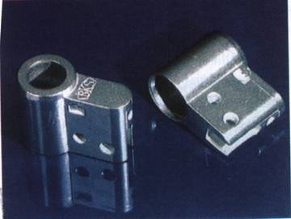
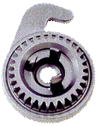
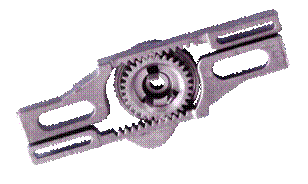
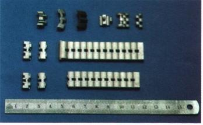

|
Giriþ:
Metal
Enjeksiyon Kalýplama (MIM-Metal Injection Moulding) Teknolojisinde
mühendisler metal ve plastik baðlayýcýlarýn karýþým formülünü
keþfettiklerinde ve karýþým malzemenin kendini çekme özelliðini
yönetmeye baþladýklarýnda adeta birer büyücüye dönüþüyorlar:
Onlar artýk çok hassas toleranslara sahip MIM parçalarý üretebilir,
ayný malzemeden farklý büyüklüklerde ya da farklý malzemelerden
ayný büyüklükte ürünler elde edebilirler. Ve bunlarýn hepsini
tek bir kalýp seti ile yapabilirler. Daha da ötesi; kalýp
setleri iþleme hatalarý içerse dahi bunu baþarabilirler.
Metal
Enjeksiyon Kalýplama ya da literatürde bilinen adýyla MIM
teknolojisi özet olarak þu aþamalardan meydana gelmektedir:
Metal tozlarý sýcak olarak organik baðlayýcýlarla karýþtýrýlýr.
Homojen ve uniform olarak elde edilen karýþým soðutularak
granülize edilir. Belli bir granül büyüklüðüne sahip malzeme
enjeksiyon preslerinde kullanýlýr. Enjeksiyon iþlemi ile "Yeþil
Parça" adý verilen, metal ve plastik baðlayýcýnýn bir arada
bulunduðu ve henüz herhangi bir metalik baðlantý içermeyen,
parçalar çekme paylarý da dikkate alýnarak istenilen geometri
ve biçimde þekillendirilir. Daha sonra baðlayýcý plastik maddeler
yapýdan dikkatli bir þekilde uzaklaþtýrýlýr. Ayrýþtýrma adý
verilen bu iþlem iki aþamada gerçekleþtirilir: Kimyasal ayrýþtýrma
iþleminde yaðlar organik bir çözücü içerisinde (solvent) eritilmek
suretiyle yapýdan çýkarýlýr. Termal ayrýþtýrma iþleminde ise
termo-plastik maddeler düþük sýcaklýktaki ön-sinterleme fýrýnlarýnda
yakýlmak suretiyle bertaraf edilir. Bu aþamada elde edilen
parçaya "Kahverengi Parça" denmektedir. Bir sonraki adýmda
parçalar sinterlenerek istenilen ölçü, yoðunluk ve mekanik
özelliklere uygun þekilde katýlaþtýrýlýr. Sinterlenerek artýk
metal halini almýþ parçalara talaþ kaldýrma iþlemleri (kesme,
delme, diþ çekme, taþlama vs.), ýsýl iþlemler (sertleþtirme,
meneviþleme, yaþlandýrma vb.) ve yüzey iþlemleri (kaplama,
karartma, boyama vs.) uygulanabilir.
MIM,
özellikle kompleks þekilli, mikro-hassas ve göreceli olarak
küçük parçalarýn elektronik, havacýlýk, el aletleri, ateþli
silahlar, týp, otomotiv ve diðer endüstriler için ekonomik
biçimde ve seri bir þekilde üretilmesine imkan tanýyan bir
yöntemdir. Mikromotorlar, aktivatörler, sensörler, ýsý eþanjörleri,
filtreler, mikrovalfler ve pompalar, medikal enstrumanlar,
biomedikal implant parçalarý ve benzerleri bazý uygulama alanlarýna
ait örneklerdir.
Fýrsatlarýn
bulunduðu diðer bir alan da kitle üretimi gerektiren tüketim
mallarýdýr. Teknolojinin eksponansiyel olarak geliþmesi ve
dünya pazarlarýnýn globalleþmesi bilgisayar, cep telefonu,
saat ve elektronik endüstrisinin sayýsýz çeþitteki maharetli
aletlerini üreten firmalarýný kýyasýya rekabet etmeye zorlamaktadýr.
Üreticiler, giderek daha eðitimli hale gelen ve ince detaylarý
farkedebilen tüketici toplumu karþýsýnda ayakta kalabilmek
için hýzlý hareket etmek ve ürünlerinin dizaynlarýný sürekli
geliþtirmek zorunda kalmaktadýr. Ayrýca sadece teknolojideki
hýzlý deðiþime ayak uydurmakla yetinmeyip, çok daha fazla
fonksiyonelliðe ve estetik çekiciliðe sahip yeni ürünler pazara
sunmaktadýrlar (örneðin farklý þekiller ve boyutlar, deðiþik
malzemeler ve çeþitli renk ve özellikte yüzey görünümleri).

Þekil.1 - MIM ile Üretilmiþ 316L Paslanmaz Çelikten Kilit
Silindir Yuvasý
Tüm
bunlarýn bir sonucu olarak tüketim mallarýnýn ekonomik ömrü
gittikçe kýsalmaktadýr. Saat, bilgisayar, cep telefonu gibi
ürünlerde bu süre 6 aya kadar düþmüþtür. Eskimiþ ürünlerin
yerine yenilerini sunmak kalýp imalatýna sürekli ve büyük
bir yatýrým yapmayý gerektirmektedir. Hammadde ise pahalý
ve bulmasý zor bir kaynaktýr. Talaþlý imalat özellikle küçük
boyutlu ve hassas parçalar sözkonusu olduðunda zor ve maliyetli
bir yöntemdir. Yüksek bozuk oraný ve geri dönüþüm güçlüðü
dezavantaj teþkil etmektedir. Bu noktada MIM teknolojisinin
göreceli olarak düþük sermaye ihtiyacý (basit olarak bir plastik
enjeksiyon imalat atölyesinin gerektirdiði kadar) küçük ve
hassas parçalarýn üretimi konusunda bu metodu çekici kýlmaktadýr,
hatta tavsiye edilmektedir. MIM'in ikincil iþlem gerektirmeyen
(veya çok az gerektiren) bitmiþ parça çýkarabilme kabiliyeti,
talaþlý imalata yapýlacak makine ve takým yatýrýmlarýný ortadan
kaldýracaðý gibi, talaþlý iþlem maliyetlerini de azaltacaktýr.
Kullanýlan malzemenin neredeyse %100'ünden faydalanýlmasý
çevresel etkiler açýsýndan da en az (veya hiç) malzeme ziyaný
ve kirletici atýk çýkmamasý nedeniyle tercih edilmektedir.
MIM parçalar genellikle malzeme özellikleri, yüzey kaliteleri,
imalat toleranslarý ve seri üretime yatkýnlýklarý bakýmýndan
üstün nitelikler göstermektedir.
MIM,
yeni kalýp maliyetlerinin azaltýlmasý veya mevcut kalýplarýn
yeni ürünlere adapte edilmek suretiyle fonksiyonelliklerinin
uzatýlmasý konusunda da avantajlara sahiptir. Kuþkusuz bu
durum, tek bir kalýp seti kullanarak ayný malzemeden boyutlarý
farklý ürünlerin elde edilebilmesi suretiyle saðlanabilecektir.
Hatta ayný kalýp setinin farklý malzemelerden ancak birbirinin
ayný parçalarýn üretilebilmesi için kullanýlmasý faydayý daha
da arttýracaktýr. Örneðin plastik bir saat gövdesi üretmek
için dizayn edilmiþ bir kalýp seti, farklý büyüklüklerde paslanmaz
çelik gövdeler imal etmek için de kullanýlabilmektedir (genç
modeli, bayan ya da çocuk modelleri vs. gibi). Bu kalýp seti
ayný zamanda farklý malzemelerden ancak ayný ölçülerde saat
gövdesi imal etmek için de kullanýlabilir (paslanmaz çelik,
sert maden, titanyum, zirkonyum vs. gibi).
|

|

|
|
Þekil.2
- MIM prosesi özellikle küçük parçalarýn seri imalatýna
uygundur. Bilgisayar harddisk komponentleri örneklerden
sadece biridir.
|
MIM
prosesi hep böyle avantajlar ve fýrsatlar sunan bir teknoloji
midir? Ne yazýk ki hayýr. Tüm diðer teknolojiler gibi MIM
de kendine özgü problemler taþýmaktadýr. MIM prosesinin baþlýca
karakteristiði sinterleme esnasýnda parçalarda meydana gelen
yüksek miktardaki kendini çekme (büzülme) olayýdýr. Yeþil
parçalar içerisindeki yüksek orandaki organik baðlayýcý (hacimsel
olarak % 40-60), kimyasal ve termal ayrýþtýrma iþlemleri sonucunda
yapýdan çýkarýldýðýnda, iþgal ettikleri yerler açýk por (boþluk)
haline dönüþür. Daha sonra sinterleme esnasýnda bu porlar
kapanarak, parça yoðunluðu teorik malzeme yoðunluðunun %96'sýna
ulaþýr. Eðer sinterleme sonrasý HIP (Hot Isostatic Pressing)
uygulanýrsa yoðunluk %99,8 'e kadar yükselebilir. Sinterleme
esnasýndaki bu kendini çekme tek boyutta lineer olarak % 15-25
arasýndadýr. Bu deðerler diðer imalat metodlarýnda pek de
duyulmamýþ bir özelliktir (belki sadece sert maden-cemented
tungsten carbur, üretiminde görülebilir). Ýþte yüksek oranlý
bu kendini çekme MIM'in en büyük avantajýný oluþturur: Kalýp
kaviteleri bitmiþ parçaya göre daha büyük yapýlýr ve sinterleme
sonrasýnda parçalar küçülerek istenen ölçüler elde edilir.
Parçalarýn verilen toleranslar içerisinde imal edilebilmesi
için kendini çekme oranýnýn çok hassas bir þekilde belirlenmesi
ve kalýp imalatýnda göz önüne alýnmasý gerekmektedir. Fakat
bu söylenildiði kadar kolay deðildir.

Þekil.3
- Çelik saat kayýþlarýna ait komponentlerin MIM dýþýnda baþka
bir imalat metodu ile ekonomik þekilde üretilmesi mümkün deðildir.
Her
bir hammadde (karýþým), ister MIM parça üreticisi tarafýndan
hazýrlansýn ister ticari olarak hammadde satýcýlarýndan hazýr
alýnsýn kendi "gerçek büzülme faktörüne" sahiptir. Bu nedenle
MIM teknolojisindeki ilk adým karýþýmýn kendini çekme oranýný
mümkün olduðunca doðru ve hassas olarak tesbit etmektir. Eðer
karýþým MIM parça üreticisi tarafýndan hazýrlanmýþsa, bilinen
gerçek büzülme faktörünün hassasiyeti ve bunun bir þarjdan
diðerine sürekli olarak ayný deðerde saðlanabilmesi (standart
sapma deðeri ile ölçülmektedir), formül hazýrlayýcýnýn proses
tekniðine, üretim þartlarýna, metroloji standartlarýna ve
firmanýn kendi deneyimlerine baðlýdýr. MIM parça üreticilerine
ticari olarak hammadde temin eden firmalar da kendi karýþýmlarýna
ait büzülme faktörünü (çoðunlukla silindirik metal test çubuklarý
kullanarak) belirlerler. Yine karýþýmýn büzülme faktörünün
hassasiyeti formül hazýrlayýcýnýn proses tekniðine, üretim
þartlarýna, metroloji standartlarýna ve firmanýn kendi deneyimlerine
baðlýdýr. Sadece bu kez karýþýmýn son kullanýcýsý deðiþkenler
üzerinde kontrola sahip deðildir.
Hazýr
karýþým satýn alan bir firma, çoðu kez hammadde üreticisi
tarafýndan verilen büzülme faktörünün doðruluðunu kontrol
edecek zamana sahip deðildir (sahip de olmamalýdýr). Hele
bu faktörün bir þarjdan diðerine ayný hassasiyetle saðlanýp
saðlanmadýðýný hiç takip etmeyecektir. Bunun yerine, karýþým
satýn alan firma kalýphanesine güvenmekte ve oraya yatýrým
yapmaktadýr. Çünkü kalýphane yatýrýmlarýnýn ölçülmesi daha
kolaydýr ve sürekli takip edilebilecek bir büyüklüktür.
|